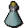
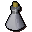
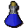

Eye of newt
| Config name | eye_of_newt |
| Item id | 221 |
| Value | 3 gp |
| Weight | 7g |
| Members | No |
| Tradeable | Yes |
| Stackable | No |
| Defined in | scripts/skill_herblore/configs/brewing/potions_additives.obj |
Eye of newt
It seems to be looking at me.
Used to make
| Skill | Level | XP | Ingredients | Tool | How | Where | Makes |
|---|---|---|---|---|---|---|---|
| Herblore | 1 | 25.0 |  Unfinished potion, | use on item | members | ||
| Herblore | 45 | 100.0 |  Unfinished potion, | use on item |  Super attack(3)members |
Dropped by
| NPC | Level | Quantity | Rarity | Via | Notes |
|---|---|---|---|---|---|
| 24 | 1 | 1/128 (0.78%) | |||
| 24 | 1 | 1/256 (0.39%) | |||
| 24 | 1 | 1/256 (0.39%) | |||
| 24 | 1 | 1/256 (0.39%) | |||
| 24 | 1 | 1/256 (0.39%) | |||
| 24 | 1 | 1/256 (0.39%) | |||
| 24 | 1 | 1/256 (0.39%) |
Sold at
| Shop | Shopkeeper | Stock |
|---|---|---|
| Frincos Fabulous Herb Store. | 50 | |
| Betty's Magic Emporium. | 300 | |
| Jatix's Herblore Shop. | 800 | |
| Grud's Herblore Stall. | 50 |
Quests
Referenced in scripts
scripts/_test/scripts/cheats/cheat_bank.rs2scripts/areas/area_canifis/scripts/canafis_citizen.rs2scripts/areas/area_rimmington/scripts/hetty.rs2scripts/drop tables/scripts/zombie.rs2scripts/quests/quest_druidspirit/scripts/ghast.rs2scripts/quests/quest_hetty/scripts/hetty_journal.rs2scripts/quests/quest_hetty/scripts/quest_hetty.rs2scripts/skill_herblore/scripts/brewing/brew_potion.rs2